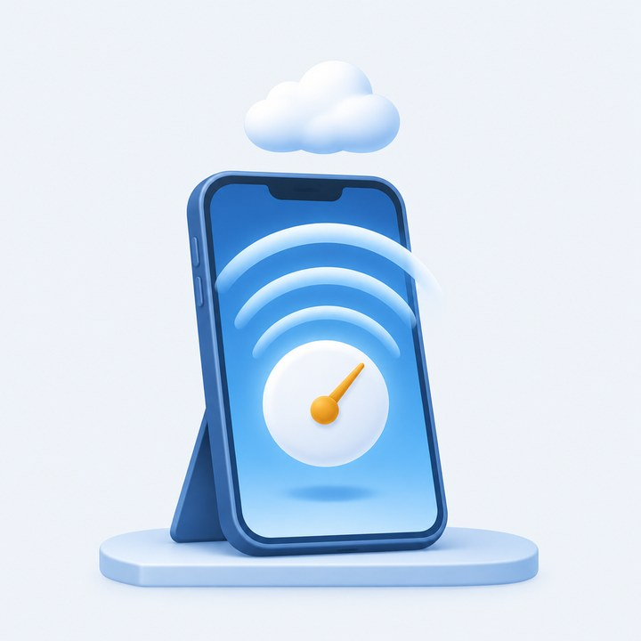

気圧計と気圧の予報グラフ
いまの気圧と、
これからの動き。
iPhone・iPad に入っている気圧のセンサーで、いる場所の気圧を測って記録します。Apple の天気の予報から48時間の気圧の動きも同じグラフに重ねて、3時間で大きく下がる時間の前に知らせます。
App Store・Google Play で配信予定買い切りで全部の機能が使え、アプリ内課金・サブスクリプション・広告はありません。開発者のサーバーもアカウントもありません。

こんな困りごとのために
端末で測っているのか分からない
いまの気圧は、この端末のセンサーで測った値だと書いて大きく出します。センサーの無い端末では、そう書きます。
変わり方が見たい
測った記録を30日残し、24時間・3日・7日のグラフで見られます。3時間の変化も数字で出します。
下がる前に知りたい
予報から「3時間で決めた幅より大きく下がる」時間を見つけ、その1時間前に知らせます。
広告と課金
買い切り。広告も、月ごとの課金もありません。記録は CSV で書き出せます。
できること
| 測る | この端末の気圧センサー（現地の気圧）・開いているあいだは1分ごと・閉じているあいだも端末が許すときに |
|---|---|
| グラフ | 24時間・3日・7日・Apple の天気の予報（過去24時間と先48時間）を重ねる・大きく下がる時間に色の帯 |
| 知らせ | 3時間で 1〜6 hPa より大きく下がる時間の1時間前（この端末の通知） |
| 記録 | 日ごとの高い・低い・30日・CSV・hPa／mmHg／inHg |
| データ | 端末の中だけ。予報を取る場所は約1kmに丸めて置く |
Android 版は予報を使わず（通信しません）、測った値で下がったと分かったときに知らせます。体調の判断や、病気の予防・治療の助言はしません。予報のデータ: Apple 天気。